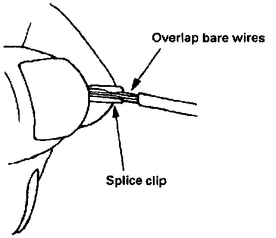
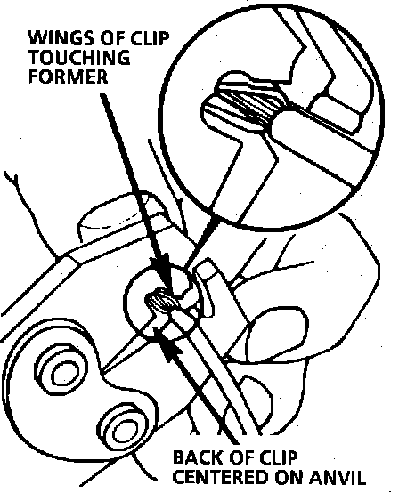
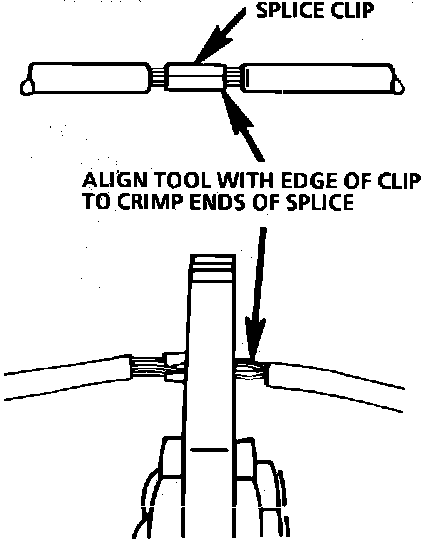
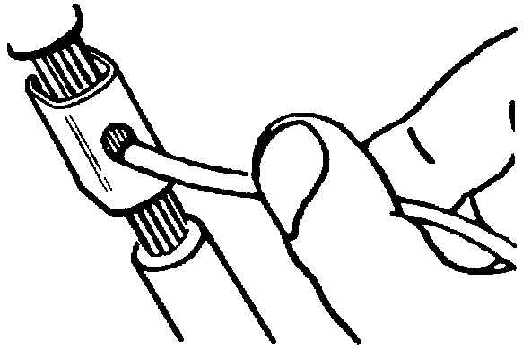
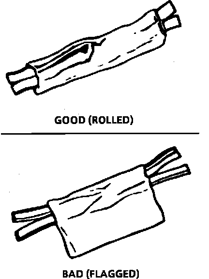
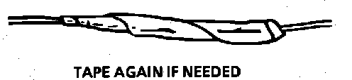

Splicing Copper Wire Using Splice Clips
The Splice Clip is a general purpose wire repair device. It may not be acceptable for applications having special requirements such as moisture sealing.Step 1: Open the Harness
If the harness is taped, remove the tape. To avoid wire insulation damage, use a sewing "seam ripper" to cut open the harness (available from sewing supply stores). If the harness has a black plastic conduit, simply pull out the desired wire.
Step 2: Cut the Wire
Begin by cutting as little wire off the harness as possible. You may need the extra length of the wire later if you decide to cut more wire off to change the location of a splice. You may have to adjust splice locations to make certain that each splice is at least 40 mm (1-1/2") away from other splices, harness branches or connectors.
Fig. 6 Wire Size Conversion Table:

Step 3: Strip the Insulation
When replacing a wire, use a wire of the same size as the original wire or larger. The schematics list wire size in metric units. See table, Fig. 6, for the commercial (AWG) wire sizes that can be used to replace each metric wire size. Each AWG size is either equal to or larger than the equivalent metric size. To find the correct wire size either find the wire on the schematic and convert the metric size to the AWG size, or use an AWG wire gage. If you aren't sure of the wire size, start with the largest opening in the wire stripper and work down until a clean strip of the insulation is removed. Be careful to avoid nicking or cutting any of the wires.

Fig. 8 Crimping the Splice Clip:

Fig. 9 Completing the Crimp:

Step 4: Crimp the Wires
Select the proper clip to secure the splice. To determine the proper clip size for the wire being spliced, follow the directions included in the J 38125-A Terminal Repair Kit. Select the correct anvil on the crimper. On most crimpers your choice is limited to either a small or large anvil. Overlap the stripped wire ends and hold them between your thumb and forefinger as shown in Fig. 7. Then, center the splice clip under the stripped wires and hold it in place.
^ Open the crimping tool to its full width and rest one handle on a firm flat surface.
^ Center the back of the splice clip on the proper anvil and close the crimping tool to the point where the former touches the wings of the clip.
^ Make sure that the clip and wires are still in the correct position. Then, apply steady pressure until the crimping tool closes, Fig. 8.
^ Before crimping the ends of the clip, be sure that:
- The wires extend beyond the clip in each direction.
- No strands of wire are cut loose, and
- No insulation is caught under the clip. Crimp the splice again, once on each end. Do not let the crimping tool extend beyond the edge of the clip or you may damage or nick the wires, Fig. 9.

Step 5: Solder
Apply 60/40 rosin core solder to the opening in the back of the clip, Fig. 10.
Follow the manufacturer's instruction for the solder equipment you are using.
Fig. 11 Proper First Taping:

Fig. 12 Proper Second Taping:

Step 6: Tape the Splice
Center and roll the splicing tape. The tape should cover the entire splice. Roll on enough tape to duplicate the thickness of the insulation on the existing wires. Do not flag the tape. Flagged tape may not provide enough insulation, and the nagged ends will tangle with the other wires in the harness, Fig. 11.
If the wire does not belong in a conduit or other harness covering, tape the wire again. Use a winding motion to cover the first piece of tape, Fig. 12.